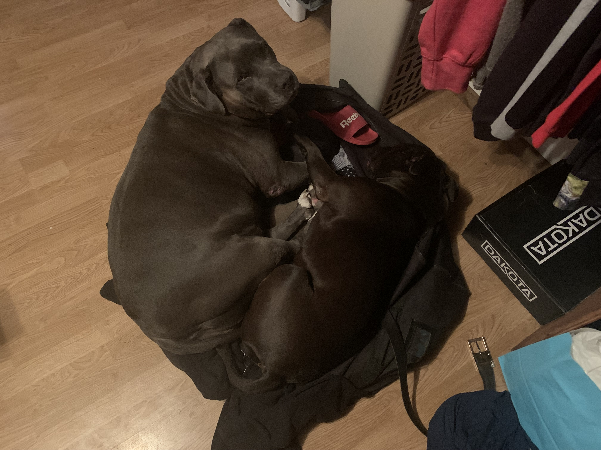
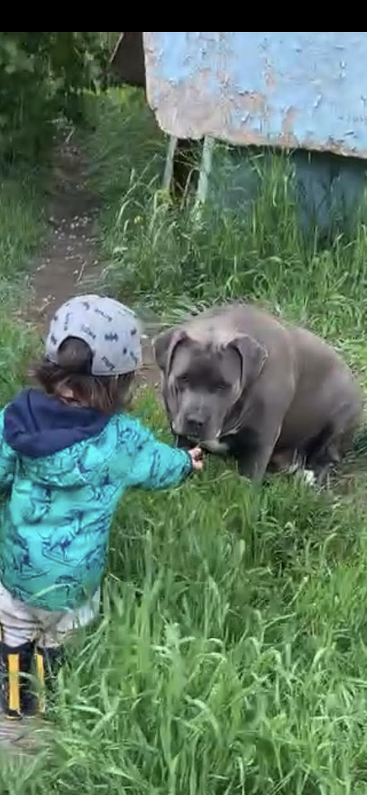

Ocean was a Blue American Bully XL who I purchased in the summer of 2016 when she was five months old. As I eventually ended up calling her, Oshie used to follow me everywhere. Until my partner got pregnant with our son, she followed her around, even waiting outside the washroom while she showered; it did not stop there. After the kids were born, she would always come running when they would cry as if she were checking on them. She weighed 120 pounds and was a gentle giant who enjoyed swimming, running, and lounging in my lap like a lap dog. Ocean always preferred to be around people compared to Echo, who just needed a bed, whether a dog or a human bed. Sadly, she developed a tumor that kept getting worse and eventually passed away in the spring of 2022 at six years old.
Oshie and Echo would lay in my duffle bag when I would come back from camp after 2 weeks I like to think it was because they missed me.
My son Lennie feeding Oshie grass.
